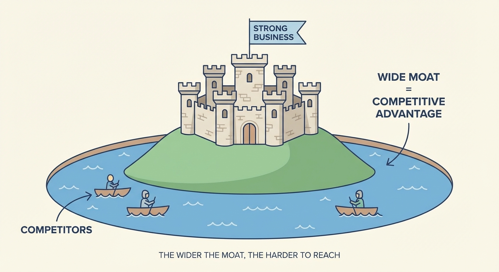

What Keeps Competitors Away (Economic Moats)
- An economic moat is what protects a business from competitors — like a castle’s moat
- Buffett looks for two types: lowest cost or strongest brand
- The ultimate test: can the company raise prices without losing customers?
- Warning: “Most moats aren’t worth a damn” — be skeptical of claimed advantages
The Castle Metaphor
Imagine a medieval castle. What keeps invaders out?
The moat — that deep trench of water surrounding the walls. The wider and deeper the moat, the harder for attackers to get across.
Buffett uses this image for businesses:
“What we’re trying to find is a business with a wide and long-lasting moat around it — protecting a terrific economic castle with an honest lord in charge.”
The castle is the business and its profits. The moat is whatever stops competitors from taking those profits.

Two Types of Moats
After decades of investing, Buffett identified two main sources of competitive protection:
1. Being the Cheapest
If you can make something for less than anyone else, you win. Competitors either match your prices (and earn less) or charge more (and lose customers).
Example: Costco Costco keeps a limited selection, negotiates hard with suppliers, and passes savings to customers. Competitors can’t match both their prices and their quality without losing money.
Example: GEICO GEICO sells car insurance directly to customers — no local agents taking commissions. This means lower costs, which means lower prices, which means more customers, which means even lower costs. The advantage reinforces itself.
2. Having the Strongest Brand
When customers pay more for your product even though cheaper alternatives exist, you have a brand moat. This is about psychology, not just product features.
Example: Coca-Cola Plenty of cheaper colas exist. People still buy Coke. Why? 130+ years of brand building created emotional associations that no marketing budget can replicate.
Example: See’s Candies In California, See’s means “the gift you bring when visiting someone.” That emotional connection lets them charge premium prices for chocolate that objectively isn’t that different from competitors.
The Ultimate Test: Pricing Power
How do you know if a moat is real? Buffett gave the definitive test:
“The single-most important decision in evaluating a business is pricing power. If you’ve got the power to raise prices without losing business to a competitor, you’ve got a very good business. And if you have to have a prayer session before raising the price by a tenth of a cent, then you’ve got a terrible business.”
This is the moat test. Forget market share data and profit margins. Ask one question:
Can this business raise prices 10% without losing significant customers?
If yes → There’s a moat. If no → There isn’t.
See’s Candies raised prices nearly every year for decades. Volume barely budged. That’s a moat.
Airlines have “price wars” constantly. That’s no moat.
From the same interview:
“The single most important decision in evaluating a business is pricing power.”
Not management quality. Not growth rate. Not market size. Pricing power.
A mediocre manager running a business with pricing power will do fine. A brilliant manager running a commodity business will struggle.
Moats That Last
Finding a moat isn’t enough. You need one that persists.
Buffett:
“A moat that must be continuously rebuilt will eventually be no moat at all.”
This is why he’s cautious about technology. Today’s tech moat can evaporate with the next innovation cycle: - Microsoft’s Windows dominance → disrupted by smartphones - Nokia’s phone leadership → destroyed by the iPhone - Blockbuster’s video rental network → wiped out by streaming
Compare to Coca-Cola’s brand, which has lasted 130+ years. Or GEICO’s cost advantage, which has persisted for 90+ years.
Questions to ask:
- Has this advantage lasted at least 10 years?
- Can it be copied if a competitor spends enough money?
- Does technology threaten to make it obsolete?
- Does it depend on specific people who could leave?
“Most Moats Aren’t Worth a Damn”
Buffett’s warning:
“Most moats aren’t worth a damn.”
Many companies claim competitive advantages. Few actually have them. Watch for:
“We have 60% market share” — Market share isn’t a moat. It’s a current state that can change. Blockbuster had huge market share too.
“We have patents” — Patents expire. And competitors often design around them.
“Our CEO is brilliant” — If the advantage walks out the door every night, it’s not a real moat.
“Regulations protect us” — Regulations can change with the next election.
Case Study: See’s Candies
Let’s see a real moat in action.
When Buffett bought See’s in 1972: - Price: $1.85 per pound
By 1997: - Price: $8.80 per pound
That’s nearly 5x higher prices with only 2% annual volume growth.
Customers didn’t leave. They kept paying more. Because See’s had an emotional monopoly in California — it meant something to give someone See’s chocolates.
That’s pricing power. That’s a moat.
An economic moat is whatever stops competitors from stealing a company’s profits — like a castle’s moat stops invaders.
Buffett looks for two types: lowest cost producer (like GEICO) or strongest brand (like Coca-Cola).
The ultimate test is pricing power: can the company raise prices without losing customers? If yes, there’s a moat. If not, there isn’t.
Be skeptical. Most claimed advantages aren’t real. And moats that require constant rebuilding aren’t really moats.
Next up: Part 6 — The Institutional Imperative. Even great businesses can be ruined by management. Here’s why smart people make dumb decisions.
References
Buffett, W. (1986). Berkshire Hathaway Shareholder Letter. Berkshire Hathaway Inc.
Buffett, W. (2011). Financial Crisis Inquiry Commission Testimony. Bloomberg.
Buffett, W. (1995). Berkshire Hathaway Annual Meeting. CNBC Buffett Archive.